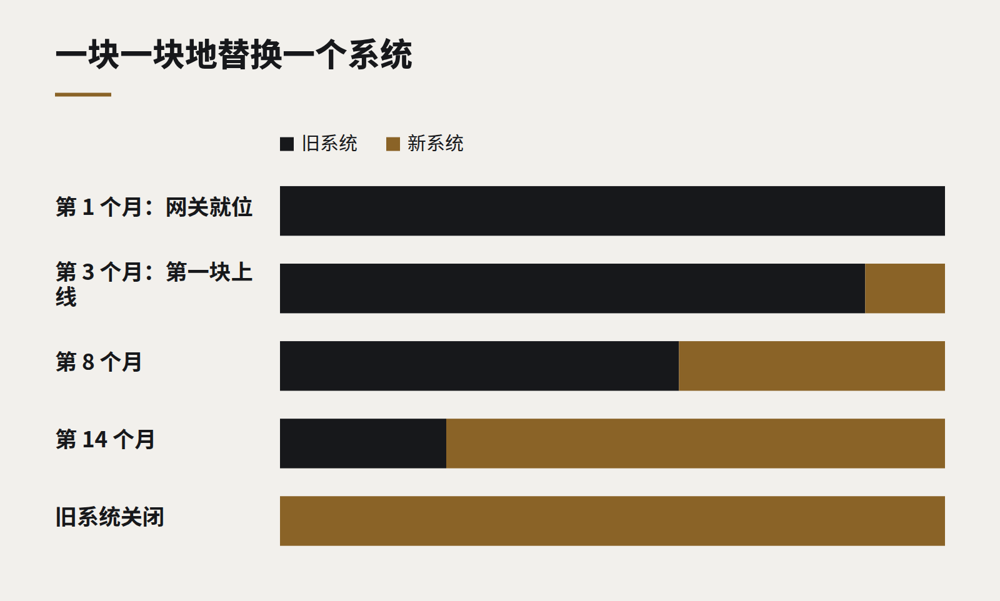

洞察
技术趋势
不靠“大爆炸”的遗留系统改造
一次性替换一切的重写，是浪费两年最可靠的方式。一次替换一条路由，说起来慢，做完却快得多。

每一个拥有十年以上老系统的组织，都有过这样的讨论：代码很难改，懂它的人已经离开，技术已经停止支持，而显而易见的答案似乎是一次干净的重写——在旁边搭好新系统，选一个周末切换，然后让旧系统退役。
这个显而易见的答案战绩很差。“大爆炸”式重写经常严重超期超支，因为旧系统里藏着多年来没人记录的规则，直到新系统把它们弄错，才有人想起来。与此同时，业务仍然需要变更，而这些变更现在要做两遍。许多这样的项目在烧了几年钱之后被取消，留下的旧系统还比以前更缺乏维护。
一块一块地替换
另一种做法已为人所知几十年，常被称为“绞杀者模式”（strangler pattern），名字来自一种缠绕大树生长、直到能够独立站立的藤蔓。你不是一次替换整个系统，而是在它前面放一个路由层，把功能一块一块地迁移过去。
- 先装一扇前门。 一个代理或网关，接收所有请求，一开始全部转发给旧系统。用户感觉不到任何变化。
- 挑一小块。 一个屏幕、一份报表、一个 API 端点——最好是有价值、自成一体、在现有系统里又很痛苦的部分。
- 重新做它，并把流量导过去。 网关把这一块发给新实现，其余一切仍然发往旧系统。
- 先对比，再确认。 有一段时间两边同时运行，检查结果是否一致。一致之后，退役旧系统里的这一块。
- 重复。 每一块都让旧系统更小、新系统更完整，直到旧系统什么都不处理，可以关掉。

为什么它更好
- 价值来得早。 第一个改进过的屏幕可以在几周内上线，而不是在一个多年项目的最后。
- 风险被控制住。 每次切换只影响一小块，改一下路由就能回退。
- 隐藏规则逐步浮现。 当某一块的新版本与旧版本结果不一致，你就发现了一条未记录的规则——一次一条，而且有一个正在运行的参照可以对比。
- 业务不停步。 新功能从一开始就进入新系统，所以没有什么需要长期做两遍。
- 你可以停下。 如果中途优先级变了，你留下的是一个部分现代化、能正常工作的系统，而不是一个做了一半、无法运行的重写。
难点
数据是最难的部分。新旧实现通常需要在一段时间内共享一个数据库，或者让两个数据库保持同步，这需要精心设计。网关会成为重要的基础设施，必须被当作基础设施对待。而且这种做法需要项目发起人有耐心，因为进展是稳定的，而不是戏剧性的。
但稳定恰恰是关键。一个每个月都交付一点有用东西的改造项目，业务会持续投钱；一个承诺在两年后的某个周末交付一切的项目，很少能真正走到那一天。
继续阅读
全部洞察